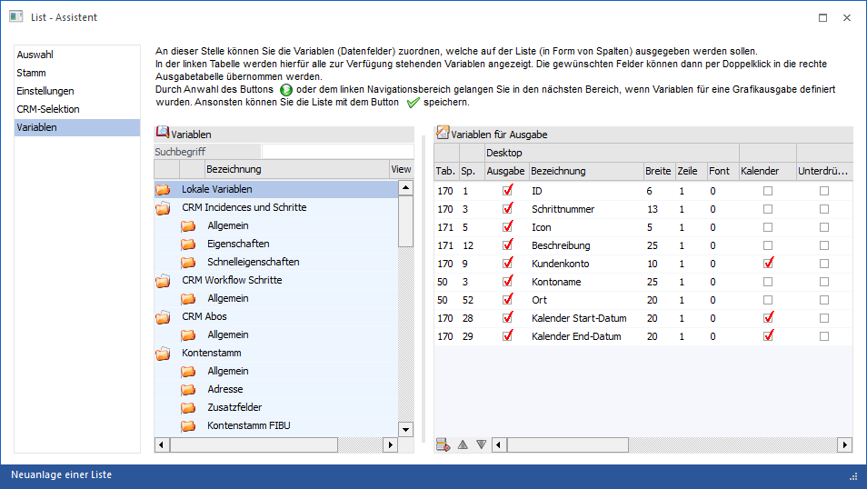
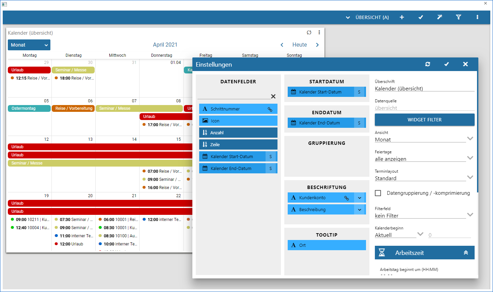

Handelt es sich um eine Liste mit der Standardausgabe "03 - Ausgabe Kalender" (Bereich "Stamm") so wird unter folgenden Voraussetzungen der Bereich "Kalender" angeboten:
ü WinLine LIST-Liste wird neu erstellt
ü Aufbau der WinLine LIST-Liste wird editiert

Durch Wahl des Bereichs "Kalender" öffnet sich der "WinLine Kalender", in welchem der gewünschte Kalenderaufbau definiert werden kann (weitere Informationen können Sie den Kapiteln "Power Report" bzw. "Power Report - Widgets - Kalender" entnehmen).
Hinweis
Der Kalenderaufbau kann auch jederzeit durch Anwahl des Buttons "Ausgabe Kalender" angepasst werden.
